Get in touch.
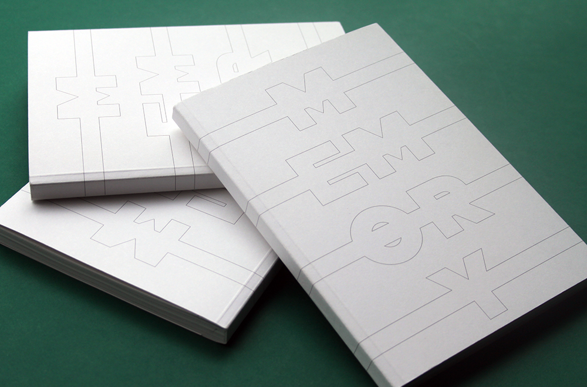
Here is a glimpse of the installation.
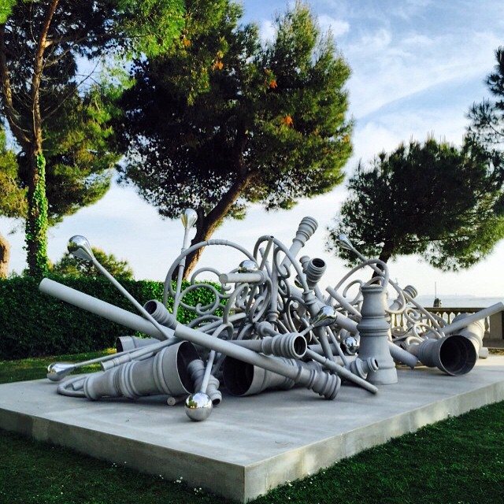
April 24, 2015 marked the 100th year anniversary of the Armenian Genocide. Streetlights of Memory — A Stand by Memorial was conceived by artist Melik Ohanian was originally to be installed in Geneva, Switzerland. However, due to political ramifications it was put on hold, this was in 2010. The memorial was finally realized (in progress) this year as a part of the Armenian Pavillon at the 2015 Venice Art Biennale.
The pavilion was located on the island of San Lazzaro.
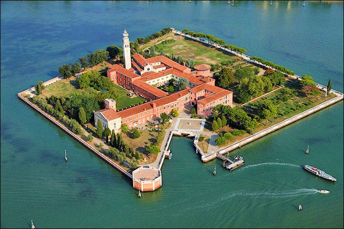
We were honored to work with Melik and his team to produce this book to accompany the installation at this years Venice Art Biennale. Which also took first place for best pavilion. You can read more about that here:
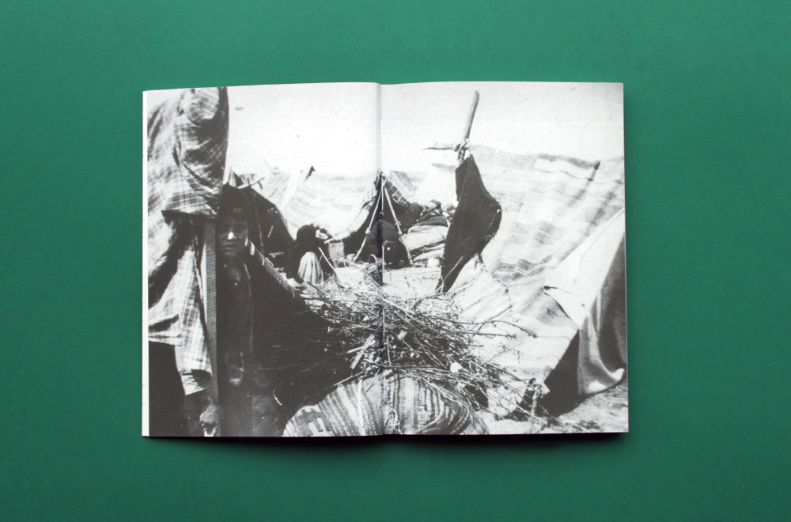
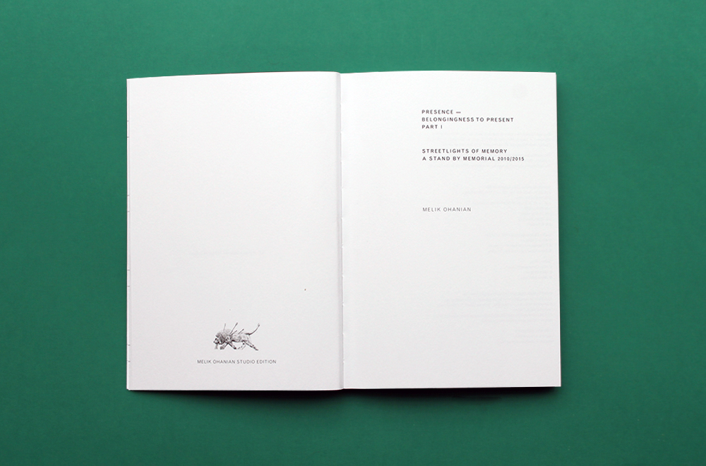
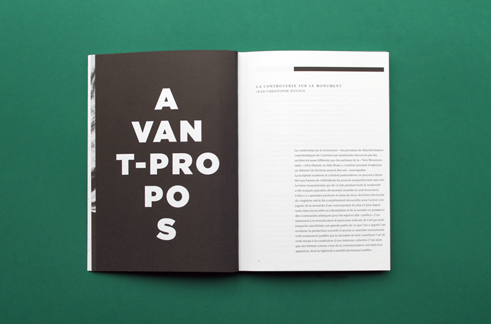
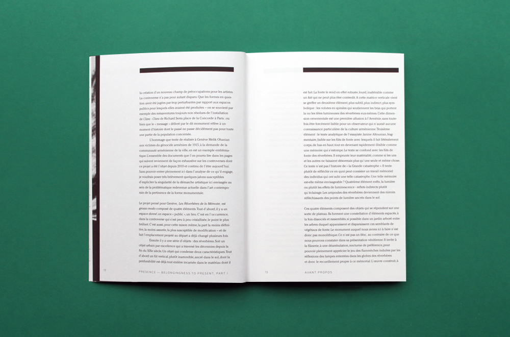
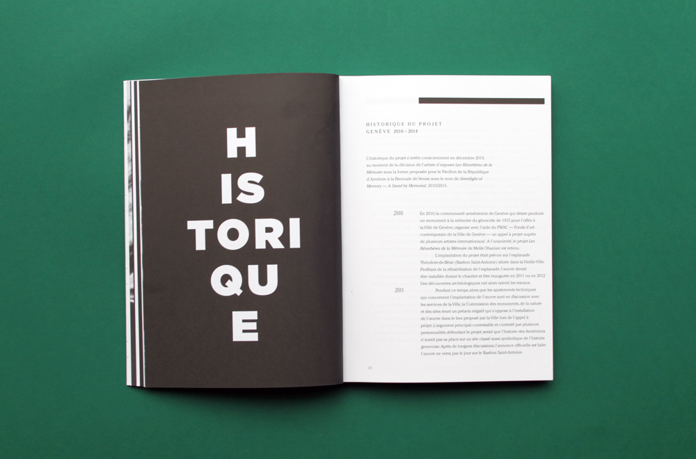
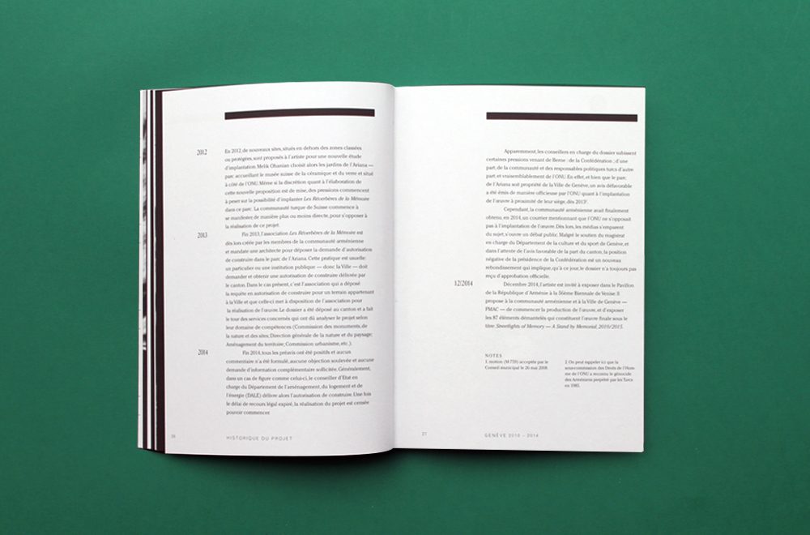
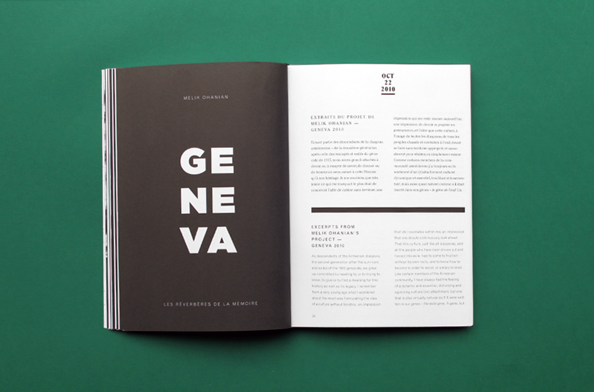
We took a lot of our design inspiration from 1900 era Armenian news clippings that Melik had supplied to us.
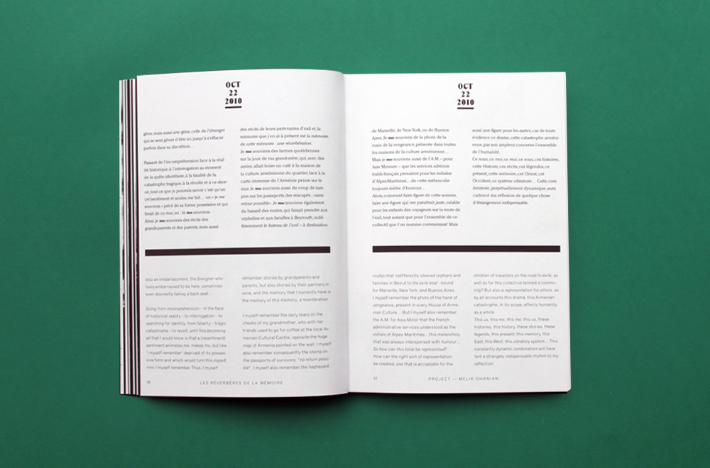
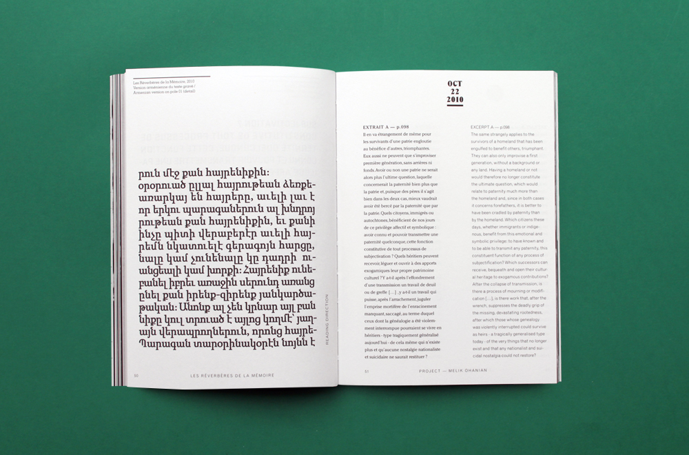
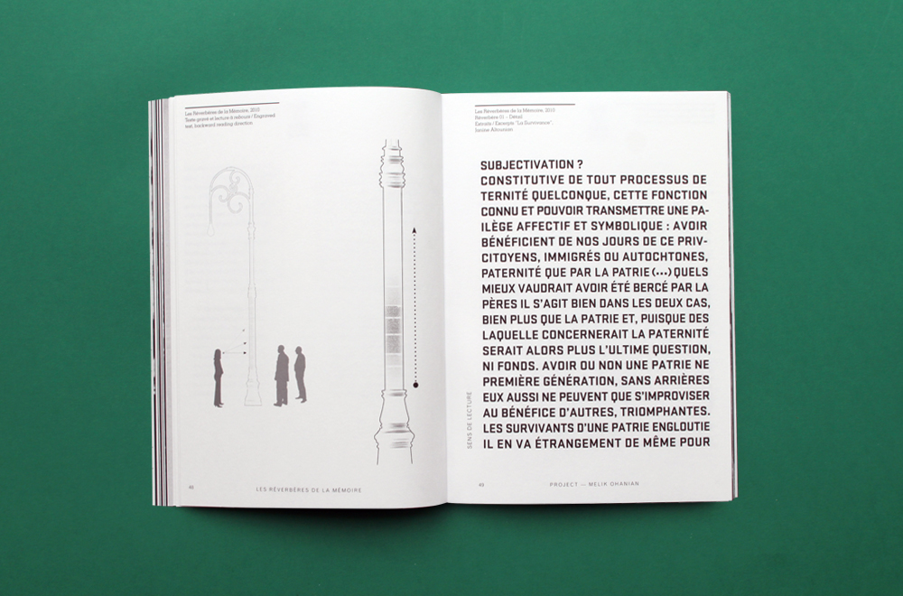
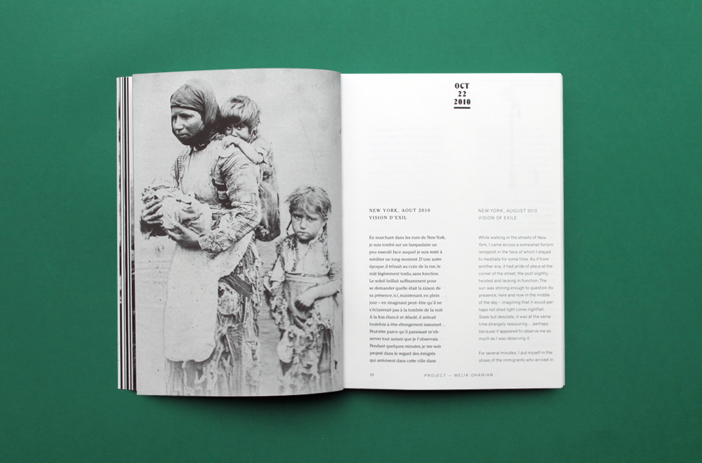
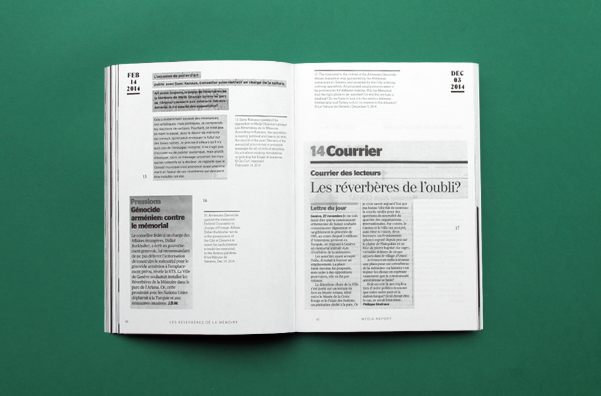
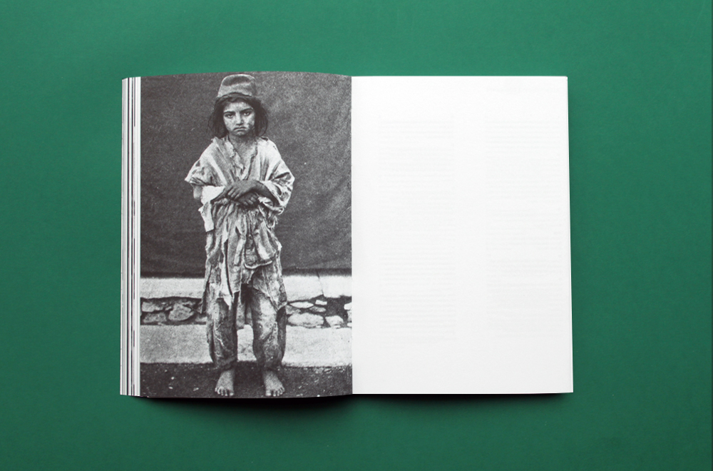